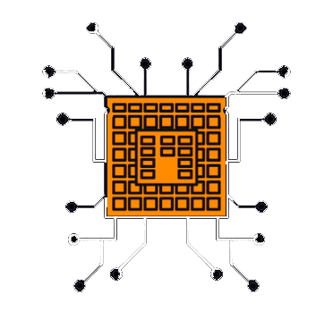
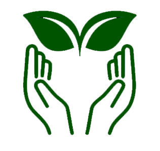
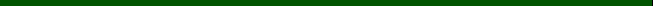

Colha dados das suas plantações
Insira os dados diários da sua colheita no sistema ECO e tenha acesso a informações detalhadas sobre as condições climáticas, previsões de safras e melhores práticas agrícolas, maximizando assim, a produtividade e minimizando perdas.

Contribua com a
causa

Ajude famílias que vivem nos índices de fome do país doando alimentos em bom estado. Com o auxílio de ongs parceiras da ECO, sua doação seria coletada, higienizada, separada e encaminhada para milhares de famílias cadatradas que vivem de insegurança alimentar.